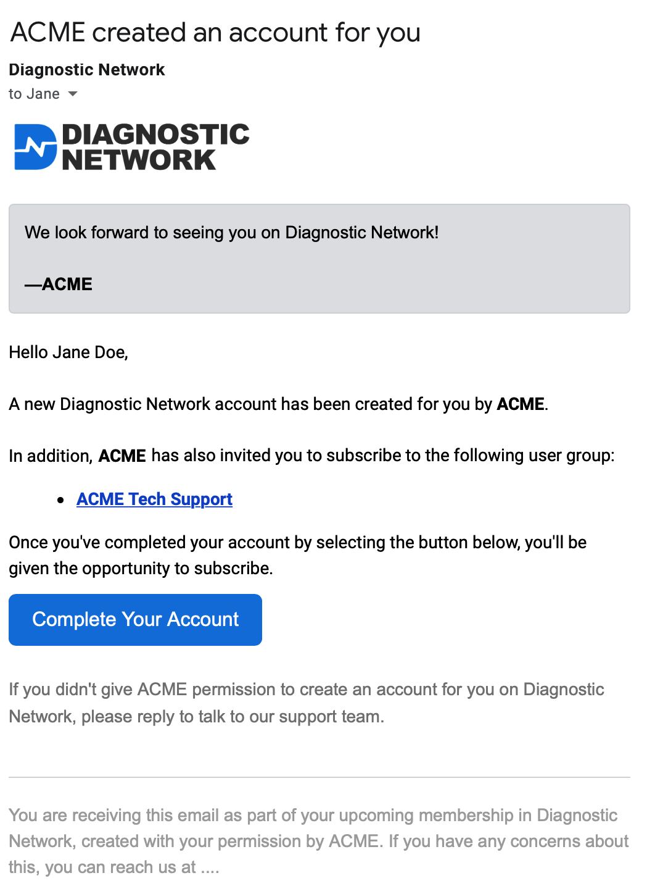

Diagnostic Network API
API Documentation
This page documents the parts of our API which are currently public. Some of these API endpoints are only available to our partners. You can view code examples throughout. We will be exposing more of our API over time. If you have any comments, questions, or requests, please open a new issue.
Overview of Diagnostic Network
Diagnostic Network is a community platform to support the vehicle service industry. The primary interface is a continuous message "stream," similar to Facebook, Twitter, and similar social networks, with the difference being each message in the stream is a link to a complete, threaded discussion.
Each message in the stream is primarily categorized by the message type (e.g. Discussion, Question, Event) and the topics and/or user groups to which the message was posted (e.g. Chassis, Driveability, Joe's User Group). Beyond that, every discussion has a title, an author, and a message body. Optionally, metadata can be attached to messages, usually varying depending on what kind of message it is, and where it's being posted. For example, an Announcement might have no metadata, an Event might have date/time metadata, and a Question might have a vehicle-specific metadata attached.
Most of the discussions take place within the core topics, though members of the community can create their own user groups, which can be open, closed, or private (hidden).
The homepage of Diagnostic Network currently features a stream of all non-private discussions, regardless of which topic or group they're in. However, every message type, topic, and user group has its own landing page, featuring a message stream that's filtered down to just the relevant discussions. Further, members are able to subscribe to their preferred topics and user groups, and have the option of showing just their subscription stream on the homepage, rather than the unfiltered view.
Typically message streams on DN display just the "root message" of each discussion, and to see the replies, you need to click through to view the entire discussion. The two exceptions where replies are also shown in message streams:
- Search results
- Member profiles
If you're a professional working in or retired from the vehicle service industry, please join us.
 AiDN® — AI-powered assistant
AiDN® — AI-powered assistant
AiDN is Diagnostic Network's award-winning AI-powered virtual robot, designed specifically for assisting with vehicle diagnostics and repair. First released in June 2023, AiDN responds to most questions posted to Diagnostic Network, and is now available for use outside of Diagnostic Network via this API.
Please contact us to inquire about pricing for AiDN and to obtain API credentials. We can also work with you to customize AiDN's capabilities and response formats to suit your needs.
Ask AiDN for Help
var response = await DNAPI.PartnerSendAsync
(
HttpMethod.Post,
"/api/v1/robot",
new
{
Vin = "JF2SKAWCXKH400000", // Optional, but helpful
Vehicle = "2019 Subaru Forester 2.5L", // Highly recommended, in case VIN decoding fails
Classification = "{ClassificationIdentifier}", // we'll coordinate with you on this value
UserIdentifier = "{UserIdentifier}", // uniquely identify the customer/employee/user
Message = "{YourMessageToAiDN}", // this is typically a user-supplied question
// `Data` can be an arbitrary piece of data. Typically it is JSON, though we can work with you
// to accept your specific data formats. It's common to use the `Data` field to pass things
// like Symptoms and TroubleCodes (DTCs), as shown below.
Data = new
{
Symptoms =
[
"Crank / No Start",
"When Cold"
],
TroubleCodes =
[
new
{
Code = "P2837",
Definition = "Your internal DTC definition, if available" // optional, but helpful
}
]
}
);
var data = Newtonsoft.Json.Linq.JObject.Parse(
await response.Content.ReadAsStringAsync()
);
if (response.StatusCode == HttpStatusCode.OK)
{
Console.WriteLine("AiDN: " + data["Message"]);
}
else if (!string.IsNullOrEmpty(data["Error"]))
{
if (data["ShouldRetry"]?.ToObject<bool>() ?? false)
{
// A temporary error occurred, retry the same request.
Console.WriteLine("Retry your request later: " + data["Error"]);
}
else
{
// A permanent error occurred, do NOT retry the same request.
Console.WriteLine(data["Error"]);
}
}
else
{
// An unknown error occurred. If it's a 4xx response (other than
// 429 Too Many Requests, recommend changing the request before retrying).
}
if ()
{
// Since `ShouldRetry` is true, it's telling us the error is temporary, and
// you can retry your request exactly as you first submitted it.
//
// data["Error"] will be provided here and will explain the underlying problem.
}
else
{
// If the HTTP status code of the response is 4xx, then there's either a problem
// with your request (400 Bad Request), and you likely need to fix something before
// retrying. (The exception is a 429 Too Many Requests error, however in that case
// ShouldRetry would be `true`.)
//
// If the error is a 5xx error, it indicates a server error, which should be
// temporary, and you can retry your request (preferably with an exponential back-off).
}
}
The Robot API call returns JSON like below when successful. The ResponseKey will be a unique identifier representing this response, currently useful for debugging issues with us.
{
"Error": null,
"ShouldRetry": false,
"Message": "This is where the response from AiDN will be. It will typically be formatted using Markdown (e.g. **bold**, _italics_, etc.). However, we can work with you to return the response in a different format if desired.",
"ResponseKey": "r6rxd67venhswfmfxiq7ito6p5"
}
When there's an error, it may be like the one shown below, indicating you should retry your request without any changes. We recommend using expontential back-off, or (if present) the delay specified in the
Retry-Afterheader in our response.
{
"Error": "Request timed out.",
"ShouldRetry": true,
"Message": null,
"ResponseKey": null
}
When
ShouldRetryis false, it indicates there is a problem with your request, which should be fixed prior to retrying the request.
{
"Error": "The request was too large, consider abbreviating your request.",
"ShouldRetry": false,
"Message": null,
"ResponseKey": null
}
Authentication
using Newtonsoft.Json;
using System.Net;
using System.Net.Http;
using System.Security.Cryptography;
using System.Text;
using System.Threading.Tasks;
public class DNAPI
{
static DNAPI()
{
// Set this to diag.net for production, or test.diag.net for testing
// Please see our "Test Access" section for more details on test.diag.net.
Client.BaseAddress = new Uri("https://test.diag.net");
}
// Cookie handling is needed when getting User Auth cookies
public static CookieContainer CookieContainer = new CookieContainer();
// Use a singleton HttpClient for all API requests.
public static readonly HttpClient Client = new HttpClient(
new SocketsHttpHandler
{
PooledConnectionLifetime = TimeSpan.FromMinutes(10), // Help with DNS handling:
PooledConnectionIdleTimeout = TimeSpan.FromMinutes(5), // https://bit.ly/client-pooling
MaxConnectionsPerServer = 5, // Contact us if you need more than 5 at a time
AllowAutoRedirect = false, // Avoid redirecting on 201, 303, etc.
UseCookies = true,
CookieContainer = CookieContainer
}
);
}
Some API endpoints are only available for our partners, using Partner Authentication. Other API endpoints require User Authentication, the same kind of authentication users experience directly on our website. And finally, some API endpoints, like our "Get Messages" endpoint, require no authentication, but may work differently when accessed by an authenticated client (e.g. anonymized messages when not authenticated, versus complete messages with full details for authenticated users).
Test Access
// Set the test platform cookie to allow access
await DNAPI.Client.GetAsync(MAGIC_LINK);
// Set the test platform cookie to allow access
$.get(MAGIC_LINK);
We highly recommend testing your API access against our test environment at test.diag.net. In order to access this site, you must pass a special cookie with each request. The easiest way to set this cookie is to hit a special URL that can be provided to you. Please contact us for the MAGIC_LINK URL used in the code sample here.
Partner Authentication
private static ASCIIEncoding AsciiEncoding = new ASCIIEncoding();
// These next two values are provided by DN to partners
private static int PartnerId = PARTNER_ID;
private static byte[] PartnerApiKey = AsciiEncoding.GetBytes("PARTNER_API_KEY");
/// Sends requests to the partner API that are authenticated using the
/// `PartnerId` and `PartnerApiKey` specified above.
public async static Task<HttpResponseMessage>
PartnerSendAsync(HttpMethod method, string path, dynamic json)
{
using (var hmacsha256 = new HMACSHA256(PartnerApiKey))
{
var requestMessage = new HttpRequestMessage {
RequestUri = new Uri(DNAPI.Client.BaseAddress, path),
Method = method,
Content = new StringContent(
JsonConvert.SerializeObject(json),
Encoding.UTF8,
"application/json"
)
};
requestMessage.Headers.Add("Authentication", $"hmac " +
PartnerId + ":" +
Convert.ToBase64String(
hmacsha256.ComputeHash(
AsciiEncoding.GetBytes($"{method}+{path}")
)
)
);
return await DNAPI.Client.SendAsync(requestMessage);
}
}
For Partner API functionality, we provide a PartnerId and a PartnerApiKey that are used to sign requests. Partners can contact us to obtain these, and learn more about what features are authorized for your partnership level.
User Authentication
var response = await DNAPI.Client.PostAsync
(
"/api/v1/user/login",
new StringContent(
JsonConvert.SerializeObject(new {
Email = "jane-work@example.com",
Password = "Jane'sPassword",
RememberMe = true
}),
Encoding.UTF8,
"application/json"
)
);
if (response.StatusCode == HttpStatusCode.OK)
{
// Access the user's unique identifier with data["UserKey"]
var data = Newtonsoft.Json.Linq.JObject.Parse(
await response.Content.ReadAsStringAsync()
);
// If using our cookie handling code in DNAPI above, the cookie is
// now set and will be passed on subsequent API calls automatically.
// But if you need the value to manually pass the auth cookie later,
// you can retrieve it from the cookie handler like this:
var authCookie = DNAPI.CookieContainer.GetCookies(
new Uri(
DNAPI.Client.BaseAddress,
"/api/v1/user/login"
)
)["dnid"];
}
else if (response.StatusCode == HttpStatusCode.Redirect)
{
// Redirects normally happen for bad passwords or incomplete accounts.
// Best option is to redirect the user to the given Location: header URL
// so they can resolve the problem directly.
}
$.ajax({
url: "https://diag.net/api/v1/user/login",
type: "POST",
contentType: "application/json",
data: JSON.stringify({
"Email": "jane-work@example.com",
"Password": "Jane'sPassword",
"RememberMe": true
})
})
.done(function(data) {
// The User Authentication cookie is now set for future
// ajax calls. You can access the user's unique identifier
// with `data.UserKey`.
});
Other API endpoints require User Authentication, i.e. the same dnid cookie that we set when users login to our website directly. This cookie can be obtained by hitting the POST /api/v1/user/login endpoint. The response will also include the UserKey that uniquely identifies the user, as well as the dnid cookie set in the Cookies header. That same dnid cookie must be passed with any API request that requires User Authentication.
Messages
Currently you can access message feeds from Diagnostic Network as RSS/Atom, embeddable HTML (suitable for dropping into an iframe on your website), or on social media like Twitter and Facebook.
Embeddable HTML
<iframe src="https://diag.net/case-studies?e=1"/>
<iframe src="https://diag.net/t/driveability?e=1"/>
<iframe src="https://diag.net/case-studies/t/driveability?e=1"/>
The above HTML code embeds three streams into iframes: recent Case Studies, recent Driveability discussions, and recent Driveability Case Studies, respectively.
It's easy to embed any message stream from Diagnostic Network on your website, using embeddable feeds. The easiest way is to navigate around DN until you are on the view that you would like to embed, and then add ?e=1 to the URL. If the user is not logged in to Diagnostic Network, this embed will show a "About DN" opening box. If you'd like to hide that, just add &hd=1 to the querystring.
HTTP Request
GET /?e=1 (all recent discussions)
GET /{TypeKey}?e=1 (filter by type)
GET /t/{TopicKey}?e=1 (filter by topic)
GET /g/{GroupKey}?e=1 (filter by user group)
GET /{TypeKey}/t/{TopicKey}?e=1 (filter by type and topic)
GET /{TypeKey}/g/{GroupKey}?e=1 (filter by type and user group)
URL Parameters
| Name | Description |
|---|---|
| TopicKey | (Optional) Filter messages by topic or user group. If user group, make sure to use /g/ in the URL instead of the /t/. See Message Topics for a list of topic TopicKeys. You can also ascertain any User Group's GroupKey by looking at the URL for any user group: the letters/dashes that appear after the /g/ path is the GroupKey (usable anywhere TopicKey is used). |
| TypeKey | (Optional) Filter messages by message type. See Message Types for a list of TypeKeys. |
Get Messages
This API endpoint does not require any authentication. But if the request uses User Authentication, the results will return more information, e.g. the messages will no longer be anonymized, and full names of members will be displayed. In this scenario, please do not publish any of the returned data publicly, to preserve the privacy of our members. Instead, please use the anonymous API results.
Our Messages API will normally return the root message of each discussion happening on Diagnostic Network, not the replies.
You can use this endpoint in an RSS feed reader (or in Slack using /feed subscribe {url}) by specifying o=atom or o=rss for Atom or RSS output format. We recommend Atom format as it returns the author with the results. (Soon we will publish details on obtaining messages in JSON format, keyword searching, vehicle make filtering, etc.)
HTTP Request
GET /api/v1/messages?o=atom
URL Querystring Parameters
NOTE: For any parameters that contain something other than a letter or a number, the value must be URL encoded first.
| Name | Description |
|---|---|
| o | (Required) Output Format: Currently we support atom or rss output formats. Atom is recommended if you want to see the author's name. |
| me | Returns only discussions created by the current user, requires User Authentication. |
| s | Sort: 0 (latest messages, the default), 1 (latest bookmarked messages first, requires User Authentication and will only return messages bookmarked by the current user), 2 (highest scoring first, only useful if passing keywords), 3 (for searches filtering down to bounties only, this returns not only the latest bounties, but also the most recently increased bounties), or 4 (oldest messages first). |
| to | Topic (or User Group): E.g. 1 for Autonomous Vehicles, 2 for Braking, and so on. You can specify multiple to parameters to filter down to messages matching any of those given topics/groups. For a full breakdown of available types, see Message Topics. NOTE: Soon this parameter will accept topic keys as well, e.g. braking instead of 2. |
| ty | Type: E.g. 1 for Case Studies, 2 for Demonstrations, and so on. You can specify multiple ty parameters to filter down to messages matching any of those given types. For a full breakdown of available types, see Message Types. |
| uk | UserKey: Filter the stream down to messages written by a specific user. The UserKey is the unique identifier found in a user's profile URL. E.g. Diagnostic Network's brand account UserKey is u3udukosklafng6pp4647hrq1u. |
| v | Vehicle Type Group: 0 (Unknown), 2 (Light Duty), 7 (Powersports), or 8 (Medium/Heavy Duty). E.g. v=8 would filter down to just medium/heavy duty discussions. By default, we don't constrain the vehicle type group. Currently, Light Duty (v=2) are the most commonly discussed vehicles on Diagnostic Network. |
Message Topics
NOTE: Eventually we plan to offer an API endpoint to retrieve the current mapping of all message topics and user groups. If you need a User Group TopicId in the meantime, please contact us.
The available topics may change over time. In addition to topics, every user group can also be specified if you know the group's TopicId.
| TopicId | TopicKey | Name |
|---|---|---|
| 1 | autonomous-vehicles | Autonomous Vehicles |
| 2 | braking | Braking |
| 3 | chassis | Chassis |
| 4 | collision | Collision |
| 5 | diagnostic-network | Diagnostic Network |
| 6 | driveability | Driveability |
| 7 | drivetrain | Drivetrain |
| 8 | education | Education |
| 9 | electrical | Electrical |
| 10 | electrification | Electrification |
| 11 | emissions | Emissions |
| 12 | employment | Employment |
| 14 | fabrication | Fabrication |
| 46 | heavy-duty | Heavy Duty |
| 15 | hvac | HVAC |
| 16 | industry | Industry |
| 102 | infotainment | Infotainment |
| 17 | management | Management |
| 18 | marketplace | Marketplace |
| 19 | motorsports | Motorsports |
| 45 | network-comms | Network Communications |
| 20 | other | Other |
| 21 | parts | Parts |
| 22 | powersports | Powersports |
| 23 | programming | Programming |
| 24 | propulsion | Propulsion |
| 25 | restoration | Restoration |
| 26 | safety | Safety |
| 27 | security | Security |
| 28 | tooling | Tooling |
Message Types
This mapping from TypeId to a type name shouldn't change, but the available types will change over time.
| TypeId | TypeKey | Name |
|---|---|---|
| 10 | announcements | Announcements |
| 9 | bounties | Bounties |
| 1 | case-studies | Case Studies |
| 2 | demos | Demonstrations |
| 3 | discussions | Discussions |
| 7 | events | Events |
| 4 | questions | Questions |
| 8 | resources | Resources (special type that doesn't normally appear in message feeds, except when the user is searching with keywords) |
| 5 | surveys | Surveys |
| 6 | tech-tips | Tech Tips |
Social Media Feeds
Every new discussion started on Diagnostic Network that is not posted to a private user group is posted to our Twitter and Facebook feeds:
Partner Customers
Partner Customer objects look like this:
{
"PartnerCustomerKey": "p0123456789abcdefghijklmno",
"PartnerRemoteId": "customer-unique-id-from-partner",
"Email": "jane-work@example.com",
"EmailAlt": "jane-personal@example.com",
"Name": "Jane Doe",
"BusinessName": "Jane's Auto Repair",
"BusinessStreet": "123 Main Street",
"BusinessCity": "Los Angeles",
"BusinessStateCode": "CA",
"BusinessCountryCode": "US",
"BusinessPostalCode": "90210",
"BusinessCounty": "Los Angeles County",
"BusinessLatitude": null,
"BusinessLongitude": null,
"BusinessPhone": "+18005551234",
"MobilePhone": "+13105555678",
"DateCreated": "2018-05-03T08:35:55.6492475+00:00",
"DateLinked": "2018-05-03T08:35:55.6492475+00:00",
"GroupInvitations": [
"group-one",
"group-two",
"group-three"
],
"Metadata": {
"Anything": {
"ThePartner": "wants",
"SuchAs": 12345,
"OrEven": true
}
}
}
Some partnerships allow for creating user accounts on Diagnostic Network, on behalf of their customers, which we refer to as “partner customers.” You may also use this API to link your existing customers to their existing account on Diagnostic Network, linked using their email address. One reason you may want to do this is to make it easier for your customers to gain access to user groups you maintain on Diagnostic Network, which can be done as part of the Partner Customer API.
Once created, a member of DN that is linked to a partner with a Partner Customer record may receive additional benefits from the partner, such as having access to closed and private user groups, and we may allow users to display these partner relationships on their user profile on DN, creating additional awareness of these partners.
Email Notifications
If you link or unlink an existing DN member to you (via the Partner Customer POST, PATCH, or DELETE endpoints), we will notify them of the change to their account status via email. When you create a Partner Customer as a real user (setting CreateUser to true, and without setting NotifyUser to false), we'll send the user an email that lets them know about their new account. This is recommended, as it is the easiest way for the user to create the password for their new account. You can even specify a custom message we'll show above our messaging. Example:

You can tell whether or not a user has been sent a notification email due to your API call by referring to the UserNotified property in the responses.
Aside from those situations, we will not send any communication to Partner Customers that have no prior relationship with us, nor will we share their email address with any third parties just as we protect our own member information according to our privacy policy.
Create a Partner Customer
var response = await DNAPI.PartnerSendAsync
(
HttpMethod.Post,
"/api/v1/partner/customer",
new
{
PartnerRemoteId = "customer-unique-id-from-partner",
Email = "jane-work@example.com",
EmailAlt = "jane-personal@example.com",
Name = "Jane Doe",
BusinessName = "Jane's Auto Repair",
BusinessStreet = "123 Main Street",
BusinessCity = "Los Angeles",
BusinessStateCode = "CA",
BusinessCountryCode = "US",
BusinessPostalCode = "90210",
BusinessCounty = "Los Angeles County",
BusinessLatitude = (string) null,
BusinessLongitude = (string) null,
BusinessPhone = "+18005551234",
MobilePhone = "+13105555678",
// if you're inviting the user to your group(s)
GroupInvitations = new List<int> {
"group-one",
"group-two",
"group-three"
},
Metadata = new {
Anything = new {
ThePartner = "wants",
SuchAs = 12345,
OrEven = true
}
},
CreateUser = true, // or `false` for stub user
NotifyUser = true, // (recommended) notify the user
Introduction = "We look forward to seeing you on DN!"
}
);
if (response.StatusCode == HttpStatusCode.Created ||
response.StatusCode == HttpStatusCode.SeeOther) // Previously Created
{
// Access things like data["PartnerCustomerKey"]
var data = Newtonsoft.Json.Linq.JObject.Parse(
await response.Content.ReadAsStringAsync()
);
}
The create customer API call returns JSON like this. (Note the
PartnerCustomerKey, which you will want to store.)
{
"PartnerCustomer": {
"PartnerCustomerKey": "p0123456789abcdefghijklmno",
"PartnerRemoteId": "customer-unique-id-from-partner",
"Email": "jane-work@example.com",
"EmailAlt": "jane-personal@example.com",
"Name": "Jane Doe",
"BusinessName": "Jane's Auto Repair",
"BusinessStreet": "123 Main Street",
"BusinessCity": "Los Angeles",
"BusinessStateCode": "CA",
"BusinessCountryCode": "US",
"BusinessPostalCode": "90210",
"BusinessCounty": "Los Angeles County",
"BusinessLatitude": null,
"BusinessLongitude": null,
"BusinessPhone": "+18005551234",
"MobilePhone": "+13105555678",
"DateCreated": "2018-05-03T08:35:55.6492475+00:00",
"DateLinked": "2018-05-03T08:35:55.6492475+00:00",
"GroupInvitations": [
"group-one",
"group-two",
"group-three"
],
"Metadata": {
"Anything": {
"ThePartner": "wants",
"SuchAs": 12345,
"OrEven": true
}
}
},
"UserNotified": true,
"GroupInvitationErrors: []
}
As a partner, with this API you can create either stub or real user accounts on Diagnostic Network. In either scenario, you must have permission from your customer to share their data with Diagnostic Network. Our privacy policy explains how we operate, but to put it bluntly, we don't spam our users and we don't allow others to spam our users, and this includes the user data provided by partners.
Example PartnerCustomerKey:
p0123456789abcdefghijklmno
These user accounts, once created, are explicitly linked to the partner, and have an associated unique PartnerCustomerKey associated with them, which begins with p and is 26 characters long (lowercase letters and numbers). This PartnerCustomerKey can be used later to update the Partner Customer, sever the relationship with the partner, or to update the relationship (e.g. to enable/disable certain partner-specific features). In addition, you can (and should) specify your own unique identifier for this customer, especially if you anticipate that Diagnostic Network may be making requests against your API in the future.
A stub user acts as a reservation. The user visits a special link to create their password and complete their registration, but most of the information should be filled in for them based on what the partner shared with us, making registration quick and simple. In this scenario, we will not contact your customer, unless they are already a member of DN.
Conversely, a real user can be created by a partner, on behalf of their customer, in the following limited circumstance:
- The partner has confirmed that their customer agrees to abide by the Diagnostic Network Terms of Service and makes them aware of our Privacy & Cookie Policies, both of which must be linked for the customer. Create Account.
- The partner must have confirmed that their customer is a professional in the vehicle service industry, or has a reasonable expectation that they are.
If an API request is made to create a user, and we indicate the user was successfully created, the partner should inform their customer that they need to click a link in an email we've sent them to complete their registration on DN and set their password with us.
For both types of user creation, an implicit link is created between the partner and the user, which can later be severed using the DELETE partner/customer endpoint. If the Partner Customer already existed, a 303 See Other will be returned, otherwise 201 Created.
HTTP Request
POST /api/v1/partner/customer
POST JSON Fields
| Fields | Type | Description |
|---|---|---|
| CreateUser | boolean |
If true, create a real user; otherwise (the default), a stub user. |
| NotifyUser | boolean |
If true (the default), send an email notification to the user, which is recommended as it allows us to give them a link to complete their DN account. If you've invited them to any groups using GroupInvitations, these will also be included in this email. |
| Introduction | string |
(Optional) If set, we'll display this HTML message from you in the email we send to the user, at the top of the email, with your partner name signed at the end. If the account you're creating is not being done in realtime at your customer's request, we highly recommend using this to explain to your customer why the account was created. |
string |
The email address of the user. | |
| EmailAlt | string |
(Optional) An alternate email address of the user. |
| Name | string |
The full name (must contain at least two name parts). |
| BusinessName | string |
The business name. |
| BusinessStreet | string |
The business street address. |
| BusinessCity | string |
The business city. |
| BusinessStateCode | string |
The business state (ISO standard 2-letter code). |
| BusinessCountryCode | string |
The business country (ISO standard 2-letter code). |
| BusinessPhone | string |
The business phone number (ideally E.164 format) |
| MobilePhone | string |
The user's mobile phone number (ideally E.164 format) |
| PartnerRemoteId | string |
(Recommended) Unique identifier for this customer, supplied by the partner, which can be used in the future for API requests that originate from Diagnostic Network to you. |
| BusinessPostalCode | string |
(Optional) The business zip/postal code. |
| BusinessCounty | string |
(Optional) The business county (not country) |
| BusinessLatitude | decimal |
(Optional) The business latitude coordinates. |
| BusinessLongitude | decimal |
(Optional) The business longitude coordinates. |
| GroupInvitations | array<string> |
(Optional) Array of your user groups to which this user will have access. |
| Metadata | json |
(Optional) Any additional data DN or the partner needs associated with this customer, perhaps to unlock other features on DN. |
Get a Partner Customer
var response = await DNAPI.PartnerSendAsync
(
HttpMethod.Get,
$"/api/v1/partner/customer/{Identifier}"
);
if (response.StatusCode == HttpStatusCode.OK)
{
// Access things like data["PartnerCustomerKey"]
var data = Newtonsoft.Json.Linq.JObject.Parse(
await response.Content.ReadAsStringAsync()
);
}
The above command returns JSON structured like this:
{
"PartnerCustomerKey": "p0123456789abcdefghijklmno",
"PartnerRemoteId": "customer-unique-id-from-partner",
"Email": "jane-work@example.com",
"EmailAlt": "jane-personal@example.com",
"Name": "Jane Doe",
"BusinessName": "Jane's Auto Repair",
"BusinessStreet": "123 Main Street",
"BusinessCity": "Los Angeles",
"BusinessStateCode": "CA",
"BusinessCountryCode": "US",
"BusinessPostalCode": "90210",
"BusinessCounty": "Los Angeles County",
"BusinessLatitude": null,
"BusinessLongitude": null,
"BusinessPhone": "+18005551234",
"MobilePhone": "+13105555678",
"DateCreated": "2018-05-03T08:35:55.6492475+00:00",
"DateLinked": "2018-05-03T08:35:55.6492475+00:00",
"GroupInvitations": [
"group-one",
"group-two",
"group-three"
],
"Metadata": {
"Anything": {
"ThePartner": "wants",
"SuchAs": 12345,
"OrEven": true
}
}
}
This endpoint retrieves a Partner Customer that you've previously created. You can identify the customer using any of: PartnerCustomerKey (our identifier), PartnerRemoteId (your identifier), Email, or EmailAlt.
HTTP Request
GET /api/v1/partner/customer/{Identifier}
URL Parameters
| Parameter | Description |
|---|---|
| Identifier | The PartnerRemoteId, Email, or EmailAlt you previously provided when creating or updating a Partner Customer, or the PartnerCustomerKey we generated when a Partner Customer was created. |
Update a Partner Customer
var response = await DNAPI.PartnerSendAsync
(
HttpMethod.Patch,
$"/api/v1/partner/customer/{Identifier}",
new
{
Email = "jane-work@example.com",
// Removing them from other groups you may have invited
// them to, and only letting them access your group-three.
GroupInvitations = new List<int> {
"group-three"
}
}
);
if (response.StatusCode == HttpStatusCode.OK)
{
// Partner Customer updated. Access updated data:
var data = Newtonsoft.Json.Linq.JObject.Parse(
await response.Content.ReadAsStringAsync()
);
}
The update customer API call returns JSON like this.
{
"PartnerCustomer": {
"PartnerCustomerKey": "p0123456789abcdefghijklmno",
"PartnerRemoteId": "customer-unique-id-from-partner",
"Email": "jane-work@example.com",
"EmailAlt": "jane-personal@example.com",
"Name": "Jane Doe",
"BusinessName": "Jane's Auto Repair",
"BusinessStreet": "123 Main Street",
"BusinessCity": "Los Angeles",
"BusinessStateCode": "CA",
"BusinessCountryCode": "US",
"BusinessPostalCode": "90210",
"BusinessCounty": "Los Angeles County",
"BusinessLatitude": null,
"BusinessLongitude": null,
"BusinessPhone": "+18005551234",
"MobilePhone": "+13105555678",
"DateCreated": "2018-05-03T08:35:55.6492475+00:00",
"DateLinked": "2018-05-03T08:35:55.6492475+00:00",
"Metadata": {
"Anything": {
"ThePartner": "wants",
"SuchAs": 12345,
"OrEven": true
}
},
"UserNotified": false
},
"GroupInvitationErrors: []
}
Updating a Partner Customer is normally useful for adjusting metadata stored with the Partner Customer account that can impact their benefits on Diagnostic Network. For example, adding or removing closed/private user groups on DN that the Partner Customer is authorized to join. You can identify the customer using any of: PartnerCustomerKey (our identifier), PartnerRemoteId (your identifier), Email, or EmailAlt.
When updating a stub user Partner Customer that has not yet been linked to a real DN user account, any updated information will be used if and when the user registers to join Diagnostic Network, which can provide a better user experience for your customer. For example, if the customer changes their email address on your site, changing it on their Partner Customer record could make it easier for them to join DN later.
For real user Partner Customers, or stub users that have already been linked to a real DN user account, updating a Partner Customer's basic information (like name, email, etc) will have no real impact, as these changes do not flow through to the user's account information on DN. (Changing that information on a real user account requires User Authentication and accessing the User API endpoints.)
To sever a relationship with a Partner Customer completely, use the Delete Partner Customer endpoint.
HTTP Request
PATCH /api/v1/partner/customer/{Identifier}
URL Parameters
| Parameter | Description |
|---|---|
| Identifier | The PartnerRemoteId, Email, or EmailAlt you previously provided when creating or updating a Partner Customer, or the PartnerCustomerKey we generated when a Partner Customer was created. |
PATCH JSON Fields
| Fields | Type | Description |
|---|---|---|
string |
(Optional) The email address of the user. | |
| EmailAlt | string |
(Optional) An alternate email address of the user. |
| Name | string |
(Optional) The full name (must contain at least two name parts). |
| BusinessName | string |
(Optional) The business name. |
| BusinessStreet | string |
(Optional) The business street address. |
| BusinessCity | string |
(Optional) The business city. |
| BusinessStateCode | string |
(Optional) The business state (ISO standard 2-letter code). |
| BusinessCountryCode | string |
(Optional) The business country (ISO standard 2-letter code). |
| BusinessPhone | string |
(Optional) The business phone number (ideally E.164 format) |
| MobilePhone | string |
(Optional) The user's mobile phone number (ideally E.164 format) |
| PartnerRemoteId | string |
(Optional) Unique identifier for this customer, supplied by the partner, which can be used in the future for API requests that originate from Diagnostic Network to you. |
| BusinessPostalCode | string |
(Optional) The business zip/postal code. |
| BusinessCounty | string |
(Optional) The business county (not country) |
| BusinessLatitude | decimal |
(Optional) The business latitude coordinates. |
| BusinessLongitude | decimal |
(Optional) The business longitude coordinates. |
| GroupInvitations | array<string> |
(Optional) Array of your user groups to which this user will have access. If this is different from a previous POST or PATCH request, they'll be removed from any groups not listed here. |
| Metadata | json |
(Optional) Any additional data DN or the partner needs associated with this customer, perhaps to unlock other features on DN. |
Delete a Partner Customer
var response = await DNAPI.PartnerSendAsync
(
HttpMethod.Delete,
$"/api/v1/partner/customer/{Identifier}"
);
if (response.StatusCode == HttpStatusCode.OK)
{
// Partner Customer deleted. Access data["UserNotified"]:
var data = Newtonsoft.Json.Linq.JObject.Parse(
await response.Content.ReadAsStringAsync()
);
}
The above command returns JSON structured like this:
{
"UserNotified": true
}
This endpoint is used to delete a Partner Customer, and if an existing Diagnostic Network member account is linked to this record, the relationship between the partner and the DN member will be severed: they'll no longer receive any partner benefits they may have previously been receiving. The user will also be removed from any closed/private user groups they previously were subscribed to for the partner. You can identify the customer using any of: PartnerCustomerKey (our identifier), PartnerRemoteId (your identifier), Email, or EmailAlt.
The entire partner customer record will be deleted once we have notified the user of the change to their account status. This should allow you to comply with any GDPR requests to erase all traces of a user. Until then, the GET response data includes a DateLinked field that will be null if the DELETE endpoint has been used on the Partner Customer.
HTTP Request
DELETE /api/v1/partner/customer/{Identifier}
URL Parameters
| Parameter | Description |
|---|---|
| Identifier | The PartnerRemoteId, Email, or EmailAlt you previously provided when creating or updating a Partner Customer, or the PartnerCustomerKey we generated when a Partner Customer was created. |
Errors
Below is an example error object for a
400 Bad Request. Its keys represent the API request parameters, each pointing to an array of one or more error messages. If there are any generic errors that are not specific to a single request parameter, the key will be an empty string.
{
"":
[
"Error message #1, not specific to any particular request parameter."
],
"ParameterA":
[
"Error message #1 about request ParameterA",
"Error message #2 about ParameterA"
],
"ParameterB":
[
"Error message #1 about request ParameterB"
]
}
The benefit of this format is it enables you to place error messages near the parts of your UI that are relevant to the specific error. E.g. the
ParameterAerrors could be placed in red near the UI's input forParameterA.
The API uses the following HTTP status codes for errors or other issues. Typically a 400 Bad Request is the most common error, indicating a problem with your request, and in this scenario the response will contain the error(s).
| Code | Meaning |
|---|---|
| 303 | See Other -- Likely the resource you're trying to create already exists. |
| 400 | Bad Request -- Your request is invalid. |
| 401 | Unauthorized -- For Partners, your API key is wrong or your signature on the request is wrong. |
| 403 | Forbidden -- The endpoint you tried to access is not authorized for the current authentication method. |
| 404 | Not Found -- The resource you're trying to access could not be found with the identifier you provided. |
| 405 | Method Not Allowed -- You tried to access with an invalid HTTP method. |
| 406 | Not Acceptable -- You requested a format that isn't supported. (Please use JSON.) |
| 429 | Too Many Requests -- You've been rate-limited, retry w/exponential back-off or the Retry-After header. |
| 500 | Internal Server Error -- We had a problem with our server. Try again later. |
| 503 | Service Unavailable -- We're temporarily offline for maintenance. Please try again later. |